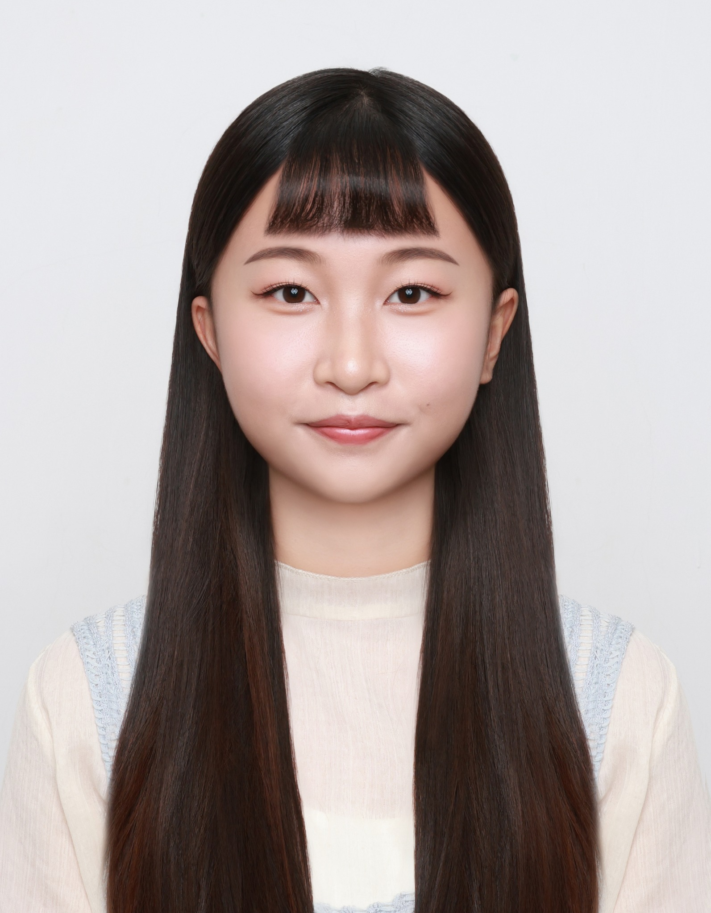
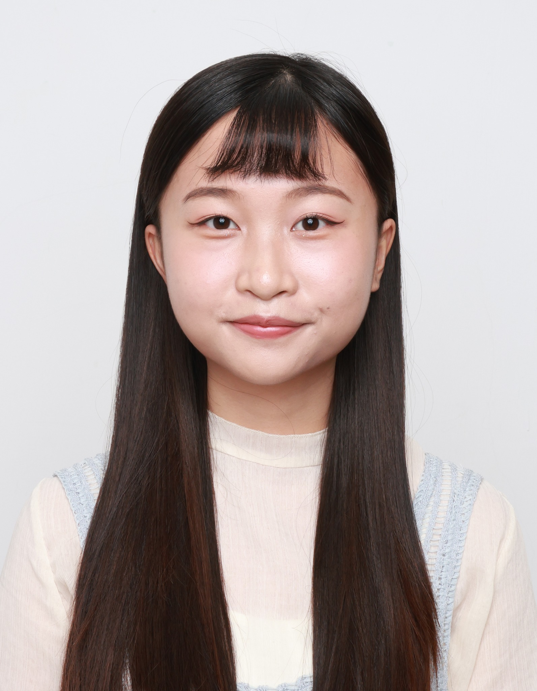
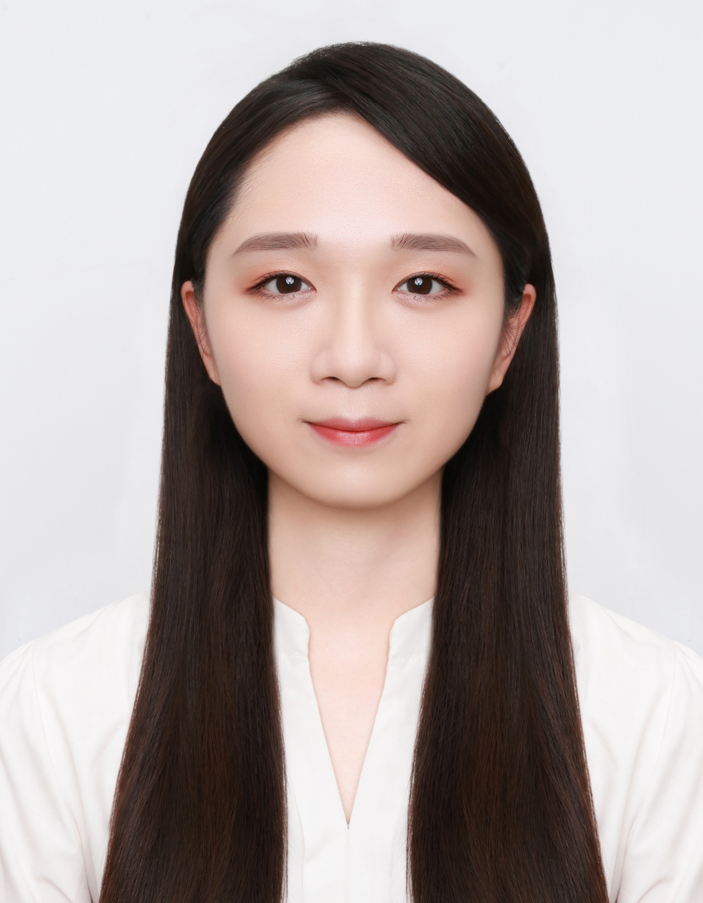
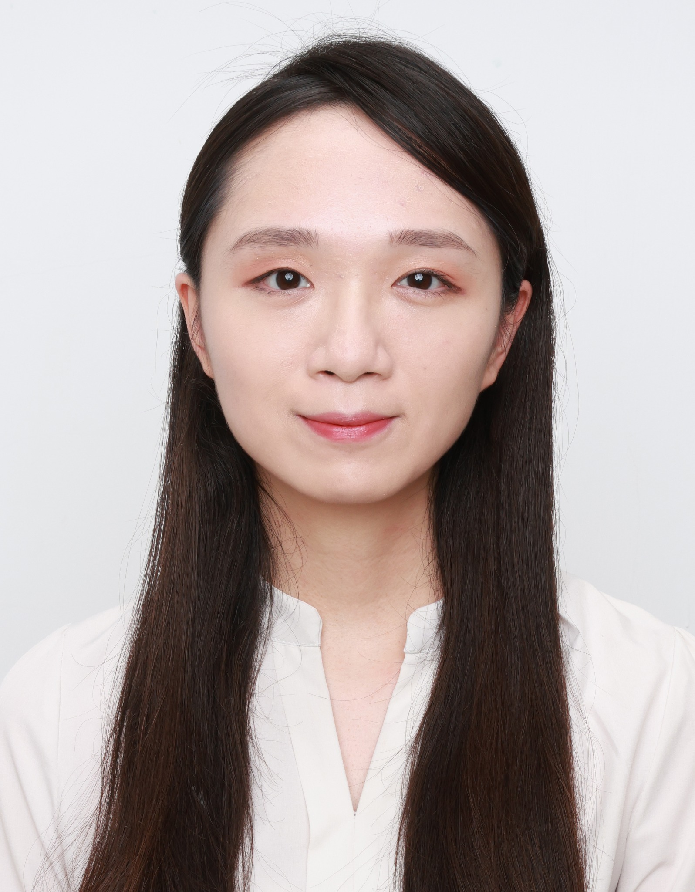
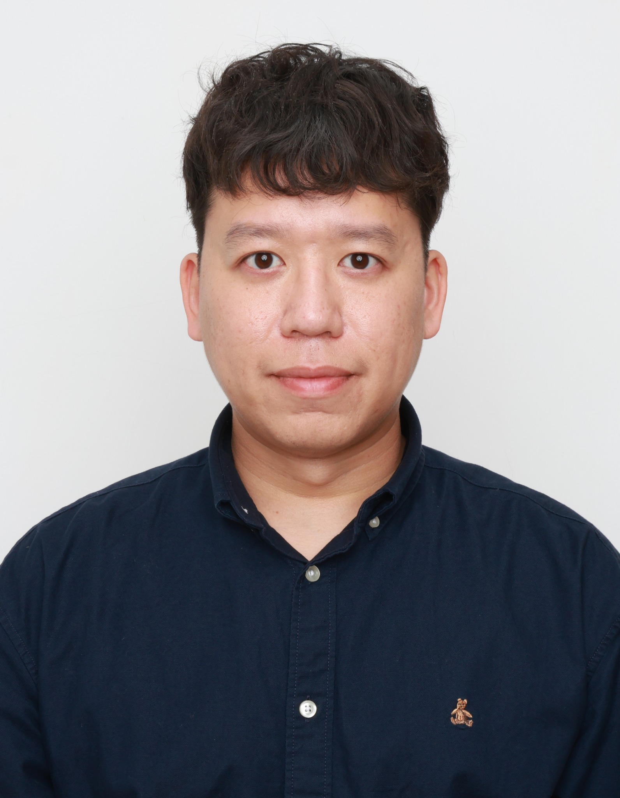

會進行修整
- 碎髮、瀏海與髮尾
- 膚況、氣色與妝容
- 眉型、睫毛與唇色
- 衣領、皺褶與服裝對稱
- 大小眼、臉等不對稱
SERVICE GUIDE · 01
BEFORE / AFTER
左右拖曳中間拉桿，查看修妝髮前後的差異。


修圖前修圖後

修圖前修圖後
修圖前修圖後RETOUCH POLICY
FAQ
韓式證件照方案已包含自然修妝髮，不需另外加購現場彩妝服務。
可以。會依照片狀況調整氣色、眉型、睫毛與唇色，不使用厚重妝感。
不會。修圖以保留五官、臉型及本人辨識度為原則。
BOOK A SESSION
請告知拍攝用途與預計日期，我們會協助確認方案與照片規格。
LINE 諮詢